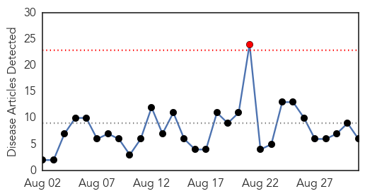
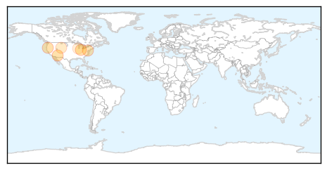

West Nile Virus
30-Day Web Trend
1 alerts, 0 warnings

30-Day Twitter Trend
0 alerts, 0 warnings

Article Locations
Article Confidences
Top Articles:
- 0.990
- Mosquitoes and the West Nile Virus
- 0.980
- More West Nile in Jackson County
- 0.925
- West Nile found in Delaware County
- 0.912
- Officials Urge Residents To Take Precautions After WNV Cases In Baltimore « CBS Baltimore
- 0.681
- Wyoming State Veterinary Laboratory director issues warning about disease
- 0.501
- Elderly south suburban Cook County man dies of West Nile virus
Top Tweets:
-
No tweets found for Aug 31, 2015
Hepatitis
30-Day Web Trend
0 alerts, 0 warnings

30-Day Twitter Trend
0 alerts, 0 warnings

Article Locations

Article Confidences

Top Articles:
- 0.892
- Daktari Enters Collaboration Agreement With Merck To Develop Test For Hepatitis C Virus
- 0.822
- Eliminating Hepatitis C Means Treating Prisoners
- 0.658
- New Delaware hepatitis C campaign will target boomers, IV drug users
- 0.637
- Rogue dentist may have exposed 7000 patients to HIV, hepatitis in Oklahoma -
- 0.522
- Eliminating Hepatitis C Means Treating Prisoners
Top Tweets:
-
No tweets found for Aug 31, 2015